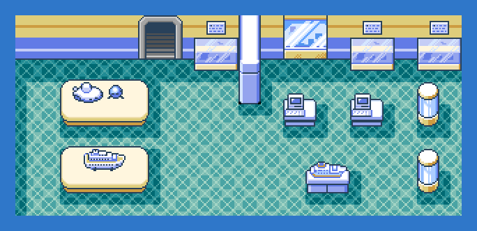
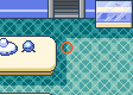
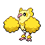

PokémonEMMA'S EMERALD
OFFICIAL Strategy Guide
Slateport City Oceanic Museum 2F
TIP
No wild Pokémon in the grass here. Time of day: M = morning (6–10), D = day (10–19), E = evening (19–20), N = night (20–6).
Event 1: Équipe Horizon

Two Horizon grunts corner Stern for the submarine parts. Beat both and their boss walks in: UNC G, your aunt, DAD's baby sister, jetsetter and boss of Équipe Horizon (this game's Team Aqua). She wants the sub for 'the far side of the horizon' and fights you with an Oricorio and a Smoochum. First of four UNC G fights.
CAUTION
Oricorio's Revelation Dance is Electric here. Rock or Ice moves take it down; Smoochum folds to anything physical.Battle
| Jetsetter UNC G Normal  Oricorio-Pom-Pom LV16 Electric  Smoochum LV18 IcePsychic Hard Oricorio-Pom-Pom LV17 Electric Sitrus Berry Smoochum LV19 IcePsychic Oran Berry Easy Oricorio-Pom-Pom LV13 Electric Smoochum LV15 IcePsychic |
Event 2: Parts delivered
Stern takes the parts and thanks you. Head north to Route 110.
Trainers
| AHorizon GRUNT: Carvanha LV15WaterDark |
| BHorizon GRUNT: Zubat LV14Poison; Carvanha LV14WaterDark |
76